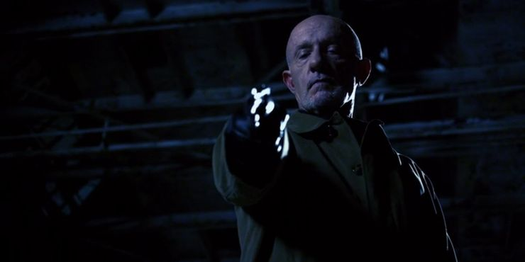

Better Call Saul

Better Call Saul is on my top 3 list because the show is extremley unpredictable yet super relatable. Jimmy struggles in life, he has always been disliked by his brother, his only remaining family. And Jimmy struggles to remain legal. He is very talented but rarely is given a shot. This show follows his life with his girlfriend Kim, and his brother Chuck who suffers from mental health disorders. Chuck is a phenominal lawyer aswell but has an irrational sensitivity to electricity. All of the conflicts between characters that exist in the Breaking Bad and Better Call Saul Universe make the show absolutley stunning to watch.
Top 3 Scenes...
Mike's Revenge
In this scene Mike kills his son's murderers. He tricks them by pretending to be drunk and tricks them with an empty gun. Mike refuses to allow his family and self to be stepped on by anyone. Mike does not care about the legality of anything that he does as long as his remaining family benefits from it.
Jimmy's Disbarrment Hearing

In this scene, Jimmy and Chuck go head to head. Chuck want's Jimmy to be disbarred as a lawyer because he does not like Jimmy and his actions. In this scene however, Jimmy reveals Chucks mental illness and forces Chuck to realize it is all in his head. He does this by having someone put a cell phone in Chuck's breast pocket. Chuck illness is sensitivity and pain to electricity so if it was real he could detect the phone.
Chuck's Suicide
After battling mental illness and brother in court. Chuck's mental state starts to sink. He begins ripping out all of the electical components from his house. because of this he lights a lantern for light and kicks it over intentionally setting his house ablaze.